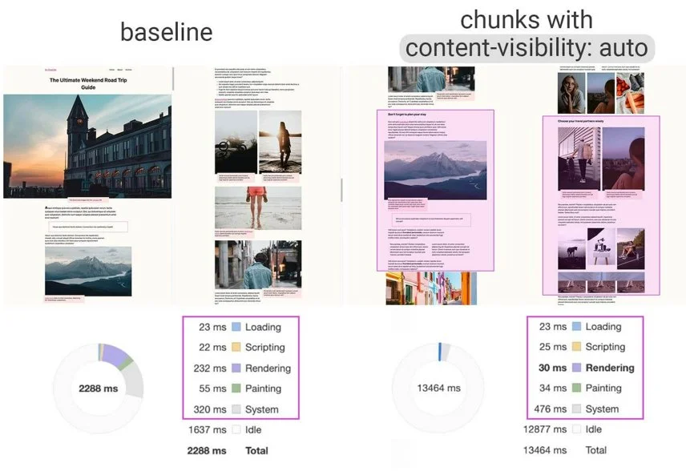

Microsoft's VASA-1 can deepfake a person with one photo
and one audio track
Where gun violence is common, some students say physical
safety is a top concern
What we know so far about Israel's strike on Iran — and
what could happen next
No data
Tesla recalls Cybertruck over sticky problem. Blame it
on — yes — soap
Middle East crisis — explained
Amsterdam was flooded with tourists in 2023, so it won't
allow any more hotels
All those methods return new version of array and leave original
untouched. All safe to use with React state changes, where you
always need new object.
To make sure, your element has full window height, even on
mobile with controls visible, use dvh unit. It’s what I’m using
here, so it will adjust to full height even on mobile.
section {
height: 100dvh;
}
To create a distance between flex / grid elements – just use
gap property. No more overlapping margins problems! Gap is
simple and just works
If your component has to adjust to different containers and
places on page, use container queries and
container units. Font size in
.box is based on
container width.
and if you want similar possibilities for older browsers, check
out
The Raven Technique
--breakpoint_wide: 1500px;
/* Wider than 1500px will be considered wide */
--breakpoint_medium: 800px;
/* From 801px to 1500px will be considered medium */
/* Smaller than or exact 800px will be small */
--is_wide: clamp(0px,
var(--base_size) - var(--breakpoint_wide),
1px
);
To make full use of CSS grid, check out subgrid
Check out display: contents for „hacky” version of
subgrid, with wider browser support.
Use accent-color if you want to customize your form controls
Parent selector :has() is
a great help if you want to style parent, based on state of
children
&:has(input:invalid) {
outline: 2px solid red;
border-radius: 4px;
p::after {
content: " (please fill)";
font-style: italic;
color: deeppink;
}
}
/* You can really go detailed with it */
/* Select section that has only one p and pre element that are siblings */
section:has(p:only-of-type, pre:only-of-type + p:only-of-type) {
pre {
place-self: baseline;
justify-self: auto;
}
}
If you want to defer rendering of some parts of your app, just
go with
content-visibility: auto.
Part of new containment spec

If part of your application updates often, and has some crazy
animations in it, add
contain: strict,
to isolate rendering layer.
This text can change font size, color and border
and size and it doesn't matter to rest of application
To make your animation go on a path, use CSS motion path
sweet, isn’t it?
Masks and clips are great idea if you want to hide part of your
element
and, maybe, show it later with animation
All this is synchronized with awesome
view-timeline
possibilites. This and
scroll-timeline
are new APIs to sync animation with scroll position.
With
@starting-style
I can add styles to element just before I add it to DOM and
transition easily.
/* This style is applied to element just before it appears in DOM */
@starting-style {
filter: brightness(2);
rotate: 45deg;
clip-path: circle(50% at 50% 50%);
}
transition-behavior: allow-discrete;
allows us to transition element to
display: none to
remove it from DOM tree at the end of animation.
Maybe you didn’t notice, but I’m using
rotate: 45deg directly in code. No
transform needed! All transform properties now work as
individual properties rotate,
translate and scale.
@starting-style {
/* With individual transform properties I can write just: */
rotate: 45deg;
/* instead of: */
transform: rotate(45deg);
}
View Transition
Are great and easy way to transition between two different DOM
states
By the way: all images you’re seeing are
.webp with lazy loading.
.webp allows great
optimization so images are light.
With [loading="lazy"] if
you don’t see images, they’re not loaded at all!
<img src="./tree.webp" loading="lazy" />
To make my titles look nice on the page, I’m using
text-wrap: balance.
This title is a normal, but a little long title, maybe from
some local newspaper
This has to be from some proper media! Look how balanced and
tidy it is!
To control this underlines I don't need any borders nor
:before elements. It's
just text-decoration
Is it the best solution for all codebases? Probably no. But it
fulfills my goals for this app so I’ll use it ;)
But even for small projects, it will become chaos in no time!
What then? Then I can use
@layers
@layer basic {
div {
p {
text-decoration-color: gray;
text-decoration-thickness: 0.125lh;
}
}
}
@layer crazy {
div {
p {
text-decoration-color: deeppink;
text-decoration-thickness: 0.25lh;
}
}
}
@layer crazy, basic;
This title is a normal, but a little long title, maybe from
some local newspaper
This has to be from some proper media! Look how balanced and
tidy it is!
Maxime debitis hic, delectus perspiciatis laborum molestiae
labore, deleniti, quam consequatur iure veniam alias
voluptas nisi quo. Dolorem eaque alias, quo vel quas
repudiandae architecto deserunt quidem, sapiente laudantium
nulla.
Maiores odit molestias, necessitatibus doloremque dolor
illum reprehenderit provident nostrum laboriosam iste,
tempore perferendis! Ab porro neque esse voluptas libero
necessitatibus fugiat, ex, minus atque deserunt veniam
molestiae tempora? Vitae.
Dolorum facilis voluptate eaque eius similique ducimus
dignissimos assumenda quos architecto. Doloremque deleniti
non exercitationem rerum quam alias harum, nisi obcaecati
corporis temporibus vero sapiente voluptatum est quibusdam
id ipsa. Look ma! No DOM changes!
const ranges = queries.map(({ el, str }, index) => {
const range = new Range();
range.setStart(el, index);
range.setEnd(el, index + str.length);
return range;
})
// Create a Highlight object for the ranges.
const searchResultsHighlight = new Highlight(...ranges.flat());
// Register the Highlight object in the registry.
CSS.highlights.set("search-results", searchResultsHighlight);